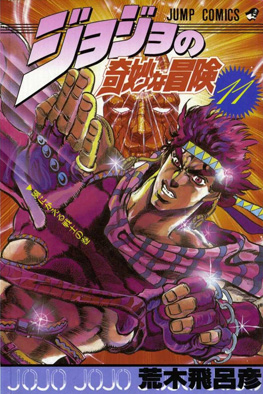
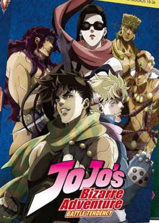

Opening
Bloody Stream
Portada
Manga
anime
Historia del manga/anime
La Parte 2 de JoJo’s Bizarre Adventure, titulada Battle Tendency, es la continuación directa de Phantom Blood y se desarrolla varias décadas después, en el año 1938. La historia sigue a Joseph Joestar, el nieto de Jonathan, quien hereda no solo el apellido Joestar, sino también el espíritu valiente y la energía del Hamon. A diferencia de su abuelo, Joseph es más rebelde, ingenioso y con un gran sentido del humor, lo que le da a la historia un tono más dinámico y aventurero.
El manga fue creado por Hirohiko Araki y publicado entre 1987 y 1989 en la revista Weekly Shōnen Jump. Consta de 69 capítulos reunidos en 7 volúmenes (del tomo 5 al 12 dentro de la colección general de JoJo’s Bizarre Adventure). Esta parte consolidó el estilo característico de Araki y marcó el comienzo del tono más creativo y extravagante que haría famosa a la serie.
La adaptación al anime fue producida por David Production y se emitió entre 2012 y 2013, con un total de 17 episodios (del episodio 10 al 26 del anime, ya que la primera parte de la temporada adapta Phantom Blood). Su animación colorida, el diseño estilizado de los personajes y la banda sonora intensa ayudaron a que JoJo’s Bizarre Adventure ganara reconocimiento mundial.
En Battle Tendency, Joseph viaja por el mundo enfrentándose a los Pillar Men, antiguas criaturas perfectas que despiertan tras siglos de sueño. Estos seres, mucho más poderosos que los vampiros de la Parte 1, buscan la Piedra Roja de Aja, un artefacto que podría otorgarles la inmortalidad total. A lo largo de su viaje, Joseph se une a aliados como Caesar Zeppeli, descendiente del maestro de su abuelo, y Lisa Lisa, una poderosa usuaria del Hamon que guarda un secreto importante sobre su pasado.
La Parte 2 combina acción, comedia y momentos trágicos, mostrando cómo Joseph usa tanto su astucia como su poder para vencer enemigos más fuertes que él. Con su estilo creativo, batallas estratégicas y personajes memorables, Battle Tendency se convirtió en una de las sagas más queridas de la franquicia JoJo’s Bizarre Adventure.